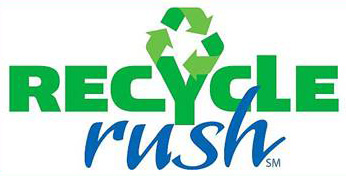
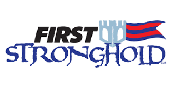
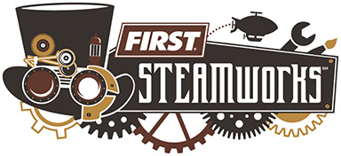

The Competition (Game) changes each year to ensure an exciting engineering challenge for all contestants. All teams receive a Kit of Parts, have access to a Competition Manual online, and an explanation of this year’s Game at The Kickoff, a gathering of representatives from all registered FRC teams simultaneously across various locations in January each year.
|  |  |  |
| 2015 | 2016 | 2017 |
Teams have six weeks from the start of January to research, design, build, and test their competition robot prior to the first week of regional tournaments.